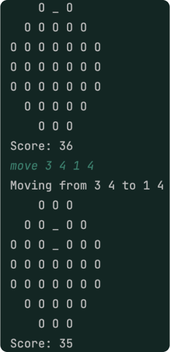
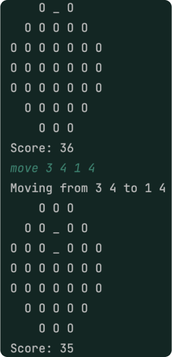

Marble Solitaire
Allows users to load images from a file and perform a variety of image
processing operations
on them.
Running the program
There are 3 ways to run the Image
Processor program:
1. Using command-line arguments
2. Using a script file
3. Using a
JAR file
Code Structure
1. Model
The model controls the logic of the image processor. It also has a gallery that the user
loads
images into. The model has four interfaces:
RGB
- Represents an RGB value, four
integers put together.
- RGBImpl implements RGB and has a constructor to represent an RBG value with and
without the alpha channel which allows transparency for png files. It has methods that returns the RGB
values individually.
SingleImage
- Represents an image with an array of RGB pixels.
- SingleImageImpl
implements SingleImage and has a constructor that has a width, height, maxValue (max RGB pixel value), and a
2D array of RGB pixels. It can only be constructed if the width and height are valid and if there is no RGB
pixel that is above the maxValue. It has methods that return the various fields and a method that returns a
specified pixel’s RGB value.
Transformations
- Represents transformations the user can make on
an image.
- TransformationsImpl implements Transformations and allows the user to transform the image by
turning it to greyscale in red component, green component, blue component, value component, luminosity
component, intensity component, turn it to sepia, brighten or darken the image, or flip it vertically or
horizontally. It can also downscale an image to a smaller size and mask images by only applying a
transformation to a part of an image.
- Filter extends TransformationsImpl and follows SOLID priniciples.
It also allows the user to filter the image by blurring or sharpening it.
ImageGallery
- A gallery of images controlled by a hash map.
-
GalleryImpl implements Gallery and has methods that put the image in the gallery with a specified
name,
gets the image from the gallery with a specified name, and returns the entire gallery.
name, gets the image from the gallery with a specified name, and returns the entire gallery.
2. Controller
Represents operations that should be offered by a controller to run the game. The
Controller has one interface:
MarbleSolitaireController
- Represents a controller that parses
user commands for the game.
- MarbleSolitaireControllerImpl implements MarbleSolitaireController and
contains a method that parses any user inputs and relays them to model and view. It catches exceptions if a
user makes a wrong move and has a private method to make sure that the user only inputs numbers for the move
command.
3. View
The view relays information to the user through a text view or GUI. It
contains two interfaces:
MarbleSolitaireView
- Represents the text view for the game
- AbstractSolitaireView
implements MarbleSolitaireView and has various methods to render the view to the user. The text view renders
both the board and any messages from the controller like a new move or a user error.
- TriangleSolitaireTextView extends MarbleSolitaireView and renders a triangle model to the user. The
unique nature of a triangle requires a separate view unlike the other models.
- ModelSolitaireTextView
extends AbstractSolitaireView and takes in a standard model like English or European.
MarbleSolitaireGUIView
- Represents a GUI view for the game
- SwingGUIView implements
MarbleSolitaireGUIView and uses various JavaSwing methods to render a GUI to the user.

 
